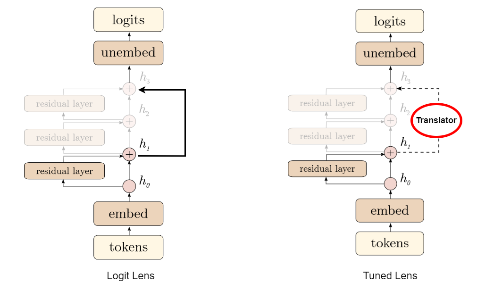
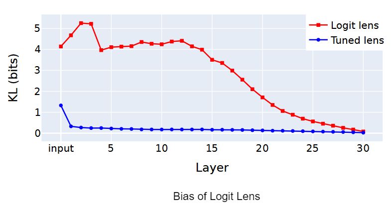
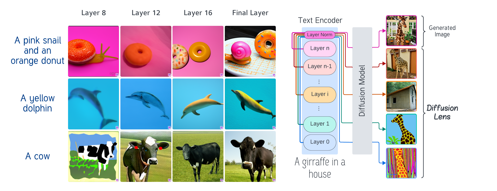
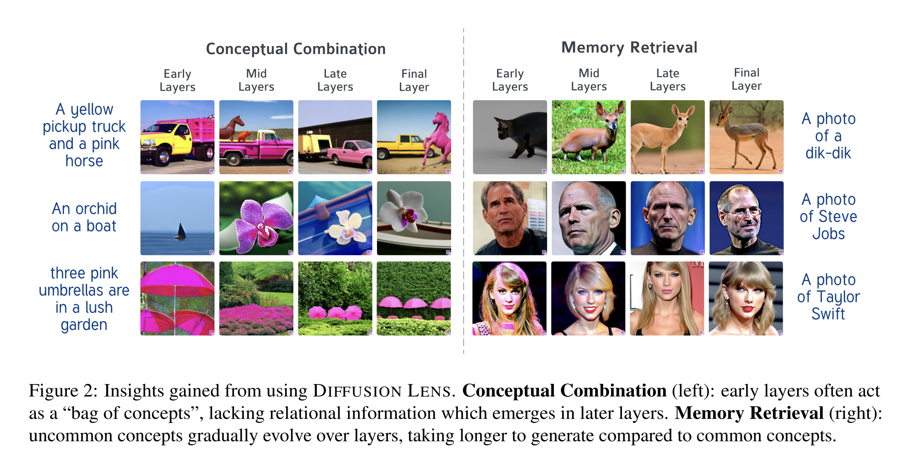

Lenses
October 01, 2024 • Prajnan Goswami, Ritik Bompilwar
The launch of GPT-3 by Brown et al. (2020) marked a turning point, drawing widespread attention to the potential of Large Language Models (LLMs) and their applications such as ChatGPT, Copilot, etc. In parallel, diffusion models emerged as a powerful tool for synthesizing high-fidelity images as demonstrated by Ho et al.(2020) and Rombach et al. (2021). These new generative AI approaches led to a paradigm shift in scaling up models and data to extract more performance.
Scaling Trends in the Evolution of Generative Models (In a Nutshell)
A study by Kaplan et al. highlights the significance of model size, dataset scale, and compute used in training. Their analysis indicates that larger models will continue to perform better. Regardless of their findings, we can clearly observe how these models have scaled up over time:
- 2019, GPT-2, 1.5 billion parameters
- 2020, GPT-3, 175 billion parameters
- 2024, Llama 3.1, 405 billion parameters.
Looking Through the Lens of Interpretability
Although scaling up these approaches has led to significant capabilities and performance improvements, understanding the hidden representations and interpret how the model progresses toward generating its final output through all the intermediate layers.
For example, when applying linear probing from the previous chapter to a Large Language Model(LLM), the process would involve training a separate probe for each layer. Additionally, each probe would require a predefined set of labels (e.g., sentiment, part-of-speech tags etc.) to evaluate specific types of information the model might encode.
In other words, probing LLMs is challenging because it requires interpreting large, multi-dimensional representations, and the results may not reflect the model's internal working for its original tasks. To address these challenges, we need a mechanism to directly look at (👀 🔎) the hidden representations of a large scale generative AI model without any external probes.
This chapter will focus on some of these technqiues which offer a clearer view of how these large-scale model processes and represents information at each layer.
Visualizing GPT through a Lens 🔎
The first attempt on how to interpret the internal workings of a GPT-like model was introduced in an anonymous blog post Interpreting GPT: the logit lens — LessWrong. The idea was fairly straightforward. In GPT-2/GPT-3, predictions are formed in a series of steps across multiple Transformer layers. The Logit Lens "peeks 👀" at these intermediate stages by taking the intermediate outputs at each layer and projecting them directly into the vocabulary space. In other words, the intermediate output from different layers is passed through the same output head that the final layer uses to predict the next token as shown in the figure below. 
What makes this approach special is that, rather then relying on external probes, Logit lens uses its own prediction head to interpret the hidden representations. By doing so, we can easily track the evolution of the model's understanding at every processing stage. That being said, this first attemt had few limitations.
Belrose et al. highlighted three specific limitations of Logit Lens in their paper Eliciting Latent Predictions from Transformers with the Tuned Lens.
- This same method didn’t work well for other models such as BLOOM (Scao et al.) and OPT 125M (Zhang et al.).
-
It is biased towards some vocabulary until the final layer of GPT.
In simple terms, this means that the output of the intervention layer
is skewed towards certain words when compared to the final output of the
GPT model itself.

The x-axis represents the different layers of the neural network, and the y-axis represents the difference (in bits) between the output of the method and the final output of the model.
- And finally Logit Lens is prone to representational drift. What it really means is that the hidden representations at the intervention layer does not align with the input representation of the final layer.
PatchScope
Other Approaches
Diffusion Lens
Diffusion based text to image models have been a game changer in the field of generative AI. Such text-to-image (T2I) models consist of a of two main components: the text encoder and the diffusion model. The text encoder takes in the text input and encodes it into a latent space representation, while the diffusion model takes in this latent space representation and generates an image. However the process by which the encoder produces the text representation is still not well understood.
Toker et al. (2024) proposed Diffusion Lens to visualize the intermediate representations in the text encoder of T2I models. Authors examined the computational process of the text encoder in the Stable Diffusion (Rombach et al., 2022) and Deep Floyd (StabilityAI, 2023) to analyse the model's capabilty of conceptual combination and it's memory retrieval process.

Key Insights from the Analysis
Conceptual Combination Analysis
-
Complex prompts require more computation to achieve a faithful representation compared to simpler prompts.
-
Complex representations are built gradually. The early layer represenations are like "bag of concepts", that encode concepts separately or together without capturing their true relationship.
Subsequent layers encodes the relationship between the concepts more accurately.
-
The order in which the objects during computation is influence by their linear or syntactical precedence in the prompt.
SD's CLIP (Radford et al., 2021) encoder tends to reflect linear precedence, while Deep Floyd's T5 (Raffel et al., 2019) encoder reflects syntactical precedence.
Memory Retrieval Analysis
-
Common concepts like "Kangaroo" emerge in early layers while less common concepts like "Dik-dik" (an animal) gradually emerge in subsequent layers, with most accurate represenation predominantly appearing in upper layers.
-
Finer details materializes in the later layers.
-
Knowledge retrieval is gradual, unfolds as the computation progresses. This observation contrdicts from prior research (Arad et al., 2023) on knowledge encoding in languagae models which suggests that the knowledge is encoded in specific layers.
-
Memory retrieval patterns in Deep Floyd's T5 encoder are different from Stable Diffusion's CLIP encoder. T5's memory retrival exhibits a more incremental pattern compared to CLIP's.
Colab Notebook and other Code Resources
Logit Lens
The Colab Notebook for the Logit Lens can be found here.
PatchScope
The official repository for PatchScope can be found here. It contains the code for the PatchScope analysis along with some jupyter notebooks.
The interactive website for PatchScope can be found here.
Diffusion Lens
The Github Repository for the Diffusion Lens can be found here.
- Common concepts like "Kangaroo" emerge in early layers while less common concepts like "Dik-dik" (an animal) gradually emerge in subsequent layers, with most accurate represenation predominantly appearing in upper layers.
- Finer details materializes in the later layers.
- Knowledge retrieval is gradual, unfolds as the computation progresses. This observation contrdicts from prior research (Arad et al., 2023) on knowledge encoding in languagae models which suggests that the knowledge is encoded in specific layers.
- Memory retrieval patterns in Deep Floyd's T5 encoder are different from Stable Diffusion's CLIP encoder. T5's memory retrival exhibits a more incremental pattern compared to CLIP's.